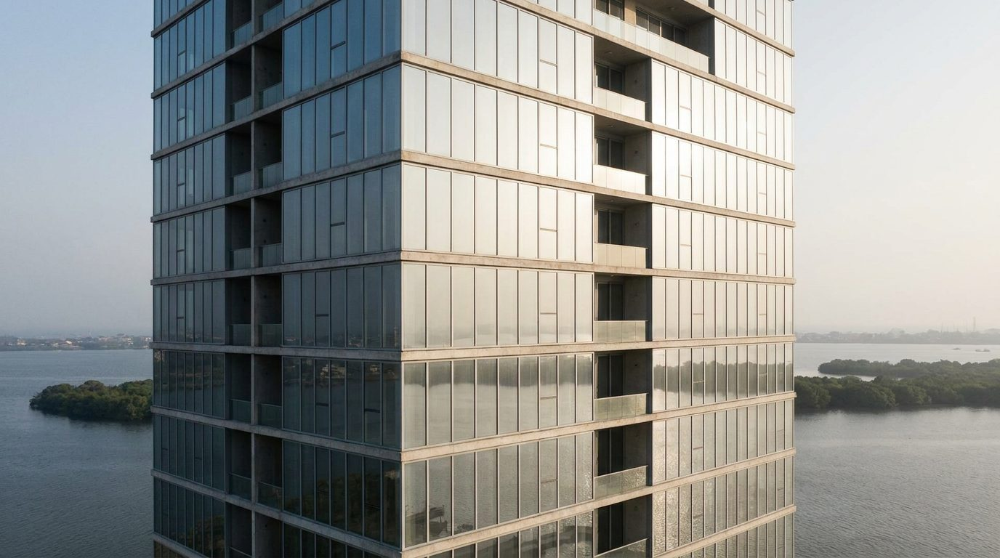
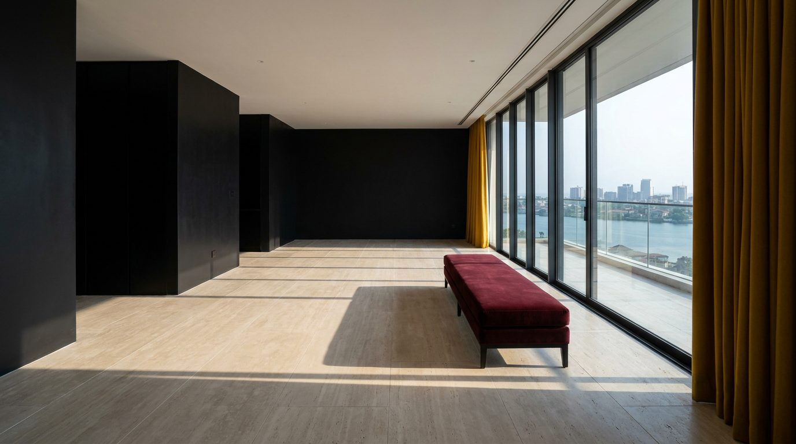

Atlante · INT-NG-02 · Nigeria · Africa
Appartamento in torre di vetro a Ikoyi, alta quota sulla laguna
Esempi · esterno e interno


Perché funziona
A Lagos il cliente di Ikoyi compra quota e indirizzo: l'appartamento in torre è la forma che dichiara appartenenza a un'economia che cresce, e l'interno deve reggere la vista sulla laguna senza diventare un salotto da albergo. Per Poetica serve una scena loud ma urbana, dove il colore è un campo pieno e non una decorazione, così il prodotto italiano si confronta con il vetro e con il nero. Il made in Italy si legge nella planarità della lacca, nel taglio del travertino e nella cucitura della tenda, non in un motivo africano citato. Non deve diventare una villa trasferita in quota con tappeti a stampa e fiori.
Architettura · elementi riproducibili
- soggiorno 6,0x5,0 m, altezza 3,0 m, vetrata continua h 2,7 m su due lati
- montanti in alluminio a profilo 60 mm, interasse 1,5 m, traverso a 2,4 m
- pavimento in travertino 900x600 mm, giunto 2 mm, spazzolato, posa a filo
- nucleo centrale 2,4x3,0 m rivestito in gesso nero opaco, spigolo vivo
- controsoffitto a 2,9 m con stacco perimetrale 15 mm e veletta lineare continua
- tenda a tutta altezza h 2,7 m, piega ogni 100 mm, ocra senape, binario incassato
- proporzione chiave: 55% vetro, 30% neutro, 15% colore in un solo blocco verticale
Fatto verificato: Ikoyi è l'isola più abbiente di Lagos, nell'Eti-Osa Local Government Area; Ikoyi II è la parte caratterizzata da sviluppi recenti e da appartamenti di lusso in alta torre (Wikipedia, Ikoyi).
Fatto verificato: il Lekki-Ikoyi Link Bridge è lungo 1,36 km ed è il primo ponte strallato costruito in Nigeria, commissionato il 29 maggio 2013 (Wikipedia, Lekki-Ikoyi Link Bridge).
Fatto verificato: Lagos è la città più popolosa della Nigeria e il principale centro finanziario dell'Africa occidentale e centrale (Wikipedia, Lagos).
Valutazione: la direzione in torre regge e completa il quadro nigeriano; rispetto alla villa di int-ng-01 cambiano tipologia, quota e direzione della luce, mentre il registro resta loud ma passa da Colorful a Color Block.
Luce
Prompt di generazione (EN)
Interior of a high-floor apartment in a glass residential tower in Ikoyi, Lagos, empty except for one low bench in deep bordeaux velvet. Floor of pale brushed travertine with a 2 mm joint; the service core and one end wall in flat black plaster, 3% sheen; a full-height mustard wool curtain pulled to one side. A single key light: low morning sun at 18 degrees, 5000 K, raking in through the curtain wall and casting the sharp shadows of the mullions across the stone; the room behind falls two stops into cool shadow. 28 mm lens, camera at 1.45 m, two-point perspective, verticals parallel, glass reflections controlled. Grade neutral with deep blacks, no warm wash. no people, no text, no logos